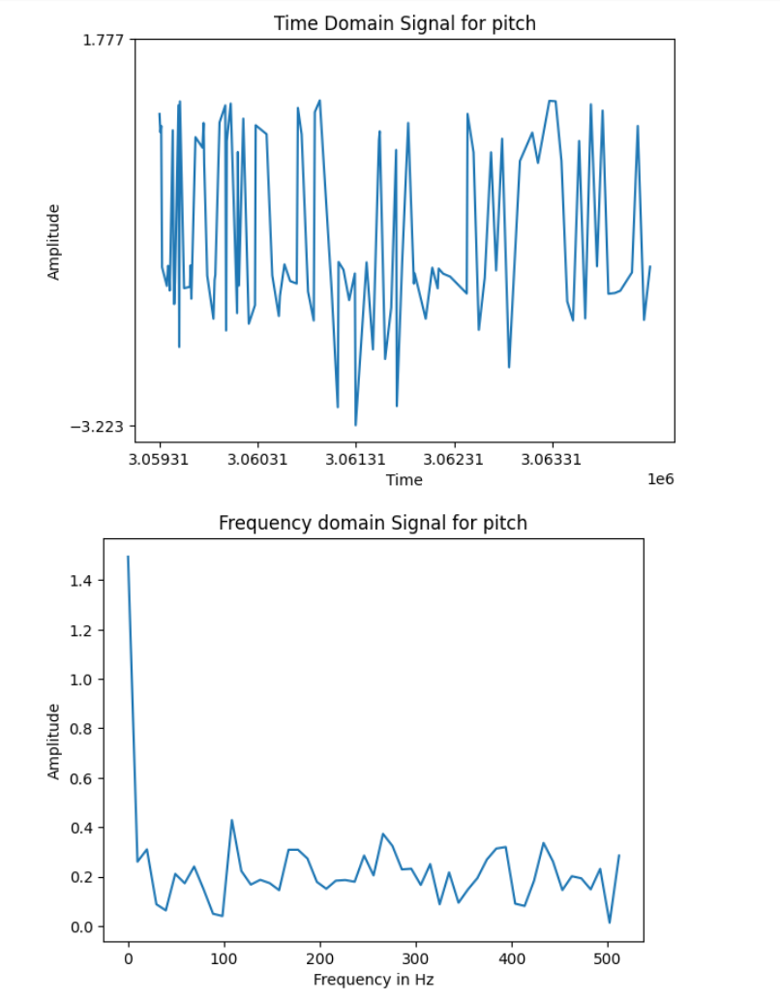
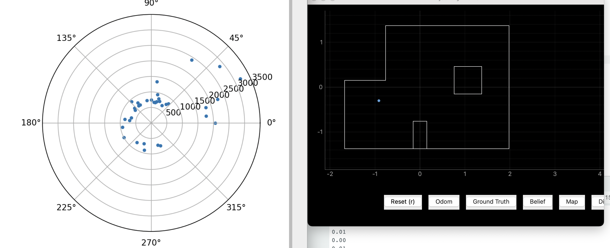

Process


About
Hello, I am Tobi! I am CS student at Cornell with a strong interest in Robotics and Machine Learning.
This website focuses on systems level design and implementation of fast and dynamic autonomous robots. I will design and build a fast autonomous car, explore dynamic behaviors, sensors, and reactive control on an embedded processor. Afterwards I will implement dynamic obstacle avoidance using a vision based system.
Contact Me
Bluetooth communication
Our initial step will be to establish an effective communication framework for our robot.
Hardware
- SparkFun RedBoard Artemis Nano: A key piece of hardware in our setup, this RedBoard Artemis Nano, is fully compatible with the Arduino suite. It forms the cornerstone of our communication with the robot. For more details, visit the product page here.
Software
- Arduino IDE: This project makes use of the Arduino Integrated Development Environment (IDE) for the development of the embedded software. This text editor, complete with all the features I need for programming Arduino hardware, can be downloaded from here.
- ArduinoBLE: The ArduinoBLE library played a critical role in this project. This library facilitates the use of Bluetooth® Low Energy on our Artemis. With its client/server model, we can send and receive various commands and requests. The data exchanged, known as "characteristics," can include information like sensor readings or voltage levels. Visit the library page here.
- Codebase: A vital part of this project was the codebase I borrowed from Cornell to handle commands. It incorporates functions for sending and receiving a multitude of commands. These commands follow the format "cmd_type:value1|value2|value3|…". Various constructors handle the data for different characteristics. The codebase can be downloaded here.
- Jupyter Lab: A significant part of this project revolved around creating Jupyter Notebooks using Jupyter Lab. It enabled me to write and test interactive Python scripts and further develop the computer vision operations. Visit the official site for Jupyter Lab here.
Tasks
The following tasks ensure a proper communication setup:
- Send Echo Command
- Get Time Command
Send Echo Command
The "ECHO" command sends a string value 'value' to the Artemis, which in turn sends back the response "Robot says -> 'value'". I implemented this feature by adding an extra case in the Arduino file and calling it in the Jupyter Notebook. The implementation code is provided below.
Notification Handler
The notification handler's function is to receive the value of any string characteristics from the Artemis board. I implemented three different handlers for the following functions. The corresponding code is provided below.
Get Time Command
The "GET_TIME_MILLIS" command retrieves the current time and prompts
the robot to reply in the format "T:current_time" on the string characteristic. I
accomplished this by adding an additional case in both the Arduino file and the
Jupyter Notebook. The implementation code and an image of the output are provided
below.

Limitations
While the Artemis chip is certainly impressive, it has significant limitations regarding the volume of data it can handle. Consider, for instance, storing 5 seconds of 16-bit values taken at 150Hz, equivalent to 2400 bits every second. The Artemis only contains 384kb of RAM, equivalent to 3072000 bits. This means we can only send 256 of these 5-second groups, which isn't much! Therefore, devising a creative solution to address this limitation when sending data to and from the device is something I will need to handle.
TOF Sensors
Hardware
- Time of Flight sensors: The final robot will include two of these sensors (although there is a caveat that I will discuss in my software section). There are many possible configurations for the sensors with each being able to pick from 4 main locations: Front, left, right, back. With a FOV of only 27° its not possible to cover all angles. My current plan is to put one sensor on the front and another on one of the sides. I believe this is optimal as it stops the robot from running into obstacles moving forward and allows the robot to focus on a singular side for most of its tricks. This however will cause us to miss obstacles from the back and other side. I included a masterpiece drawing below:
- QWIIC breakout board: We utilized a QWICC brekaout board in order to provide more connections for our sensors. The wiring is pictured here


Software
- I2C : The main communication protocall we will be looking at this lab is Inter-Integrated Circuit communications (I2C). I2C is special in that it has features from both SPI and UART (Other communication protocalls) and it only uses two wires to communicate. Serial Data (SDA) sends and recieves data while Serial Clock (SCL) carries the clock signal. The default I2C address for our VL53L1X should be 0x52 but upon scanning our ports we see that it is 0x29. This is because the address is bit shifted. The library page can be viewed here
Tasks
This part included completing the following tasks:
- Sensor test
- 2 ToF sensors
- ToF sensor speed
- Time v Distance
Sensor test
Our ToF sensor allows for 3 different modes for short, medium, and long
respectively. I decided to use short distance mode as the purpose of our robot is to
do stunts and it cares most about what is immidaitely around it. While medium and
long distance mode would provide support for seeing objects farther away, it
suffers in lit enviornments. Since we dont really need much range but that lab is a
lit enviornment, this furthers my resolve to go with short range senseing. The max
range I was able to get with this mode was 1932 mm by pointing my ToF sensor to a
white wall and slowly walking away.

Since I did not have a tape measure on me, I utilized my ipad as a
measuring tape and setup my tests by measuring the distance to a wall using the ToF
sensors and comparing the results to my measurements with the iPad. I started off
about 50mm from the wall and moved back untill I reached 200mm

I utilized the default code and analzed the measurements after. Overall
my measurements were very percise and any error in my graph can probably be
explained by human error (non perfect intervals of measurement). On the X axis I
have the actual distance (in mm) and on the Y axis I have the measured distance. A
perfectly straight line would repersent perfect measurements. In order to test
repeatability, I conducted 2 different tests as seen with the green and blue lines
on the graph.

Finally, I also tested the ranging time to be 1706 microseconds utilizing the following code:
2 ToF sensors
The next step was to solder and attach an additional time of flight sensor to my system:
In order to get this working in software I connected (temporarily) a
wire between
the XSHUT pin on my left ToF sensor and the GPIO_8 pin on my artemis. This allows me
to shutdown one of the sensors change the others address before
reenabling the first sensor and allowing my two sensors to work in parallel

ToF sensor speed
Getting the code to run quickly is very important, this means that our
sensor data must come in as fast as possible. Here I include code that rapidly
prints the artemis clock and at the same time prints ToF data from the two sensors
when they are available. My loop runs at 8 ms per iteration. The limiting
factor is definitely the sensor as shown in the picture. Below I included a picture
of the reuslts as well as the code:

Time v Distance
Here we record time-stamped ToF data for 5 seconds and send it to a
computer using bluetooth. I edited the bluetooth code from lab 2 by adding a command
for the ToF sensor. The code as well as a graph of a run is shown below. For the
graph I only included timestamps with information from both sensors. The X axis is
time in miliseconds and the Y axis is distance in milimeters.

IMU
The goal of this part is to connect the Artemis board to an inertial measurement unit sensor through a QWIIC connector and test the functionality of thes sensors. After that we will get our robot battery connected and finally get our robot up and running.
Hardware
- 9 DOF IMU sensor: I utilized a 9 degree of freedom inertial measurement unit sensor. This sensor is capable of recording acceleration and Gyroscope data. Its datasheet can be seen here. I wired it to my artemis as shown below:
- QWIIC breakout board: I utilized a QWICC brekaout board in order to provide more connection ports for the Artemis.

Tasks
This part included completing the following tasks:
- Accelerometer Test
- Gyroscope Test
- Sampling Data
- Battery Connection
Accelerometer Test
Using these equations for pitch and roll:
I recorded a test below showing the output at {-90, 0, 90} degrees (value 2
= pitch,
value 3 = roll). I have found the values to be extremely accurate with a
maximum
2.35 degree difference from the expected value
One key fact noted earlier, and one clearly seen in the above
video, is
that the accelerometer data contains a lot of noise when moving. This noise
would be
amplified even
further when running the RC car in its vicinity. I collected 106 samples of
21.2 mhz
data by sending information over bluetooth. I analyze this noise through a
fourier transform. I include fft data for both pitch and roll, I
additionally
include the code I used to generate the FFT graphs based on the provided
tutorial.
Looking at the data, there dosent seem to
be much of a frequency spike which is a
result of a low pass filter on the chip by default (according to the
datasheet)


Gyroscope Test
Using these equations for pitch, roll, and yaw:
I recorded a test below showing the output of the gyroscope (value 2 =
pitch,
value 3 = roll, value 4 = yaw). I found that increasing the sampling
frequency led
to more
accurate results. I increased the final sampling frequency by a factor of 10
then a
factor of 100 to test this. I have found the values to be less noisy than
the equivalent measurements from the accelerometer but after increasing the
sampling
frequency and adding movement, the
gyroscope quickly suffers from drift. Drift causes the error to quickly
accumulate
to the point where the value drifts away from the expected value
significantly. This
isnt seen in
accelermoter data.
We can remedy our above problem by implementing a complementary filter described below: This combines data from the accelerometer and the gyroscope to produce both accurate and stable data. The implementation for the filter is shown below: As can be seen below, the complimentary filter is a smashing success. My sensor values are now usable with no drift or real noise to worry about.
Sampling Data
After speeding up the code by removing all serial print statements and skipping any iterations where data wasnt ready, I was able to get to sample my IMU at a frequency of 29 ms. After this I created a notification handler to collect timestamped IMU data and store it in an array.
Finally, I capture both my IMU and ToF sensor data with the
same
command. I chose to seperate the data into their own arrays as the ToF data
would
severly bottleneck my IMU data. Using a simmilar structure to my above code
I am
able to capture both IMU and ToF data.
 With my current rate of 64 hz of sampling for IMU data (14 bytes each) and 7
hz
sampling of ToF
data (6 bytes each). With the arduino having 393216 bytes on board this
means I can
store data for 960 seconds before my memory is full.
With my current rate of 64 hz of sampling for IMU data (14 bytes each) and 7
hz
sampling of ToF
data (6 bytes each). With the arduino having 393216 bytes on board this
means I can
store data for 960 seconds before my memory is full.
Battery Connection
To prevent noise disturbance, I utilize different batteries for the motors and the electronics connected to the Artemis. I use a smaller 650mAh battery for my electronics and a bigger 850mAh one for my motors so I wont have to charge the battery as often. I soldered JST connectors to the 650mAh battery so I can connect it to the Artemis as shown below:
RC car test
Playing with the car made me realize just how jittery it is. The robot moves very fast and sometimes the commands lag. Attempting to turn is very hard as the robot seems to overturn most of the time. I crashed the robot several times.
I recorded again this time with the Artemis. This is a picture of the robot all connected: And here is a video and a graph of data taken from the robot.
Motor Control
The goal of this part is to convert the RC car to a computer controlled robot using the artemis. This rquires the addition of two motor controllers to our board
Hardware
- DRV8833 Dual H-Bridge Motor Driver (2x): I utilized DRV8833 Dual H-Bridge Motor Driver. Its data sheet can be found here. This driver is capable of driving either two DC motors or one stepper motor. For my purposes, I will elect to drive two DC motors. One important note is that I will use a seperate battery to power the motors and the motor controllers. This is mainly to reduce the noise betwwen the motors and the artemis. I wired it to my artemis as shown below: I chose pins 7, 11, 12, and 13 as they are PWM capable pins and are easily accessible with my current coniguration.
Lab Tasks
This part included completing the following tasks:
- Oscilloscope Test
- Spin Test
- double spin test
- Calibration
- Open Loop
Oscilloscope Test
In order to use the Oscilloscope I hooked up the power
supply and
oscilliscope as shown below:

I utilized the below code to test the functionality of the boards:
Changing only the PWM signal from 100 to 200 I was able to
generate these two graphs
enusring my motor drivers worked and I could manipulate the duty cycle.


Spin Test
I performed a spin test to make sure my robots wheels and motors were
functional. I was able to use the code below to produce the motors spinning as
intended in the
video below
double spin test
After fully wiring the robot as shown below: I was able to run the robot on the ground:
I found that a PWM value of 45 was the lowest possible value for the car to move forward and on axis turn.
Calibration
In order to get my motor to spin at the same rate I had to find a callibnration factor. After testing a multitude of values I found that a ratio of 1.25 right/left side worked the best. I tested this by making the robot follow a piece of tape for 7 feet and evaluating if it could follow the line. Here you can see my robot running in a straight line after calibration.
Open Loop
Finally I used open loop control to manuever my robot with
the code
below and produced the video below using the corresponding code:
PID control
With my robot all wired up I decided to implement a fundamental control algorithm: PID control
Setup
For an interactive task like PID control a good debugging system is
essential. I implemented functions in
arduino that would allow the robot to store all of the data on board in
a matrix of values during the PID control. I then implemented functions in python
that would allow editing of PID values on the fly and a handler to recieve
all of the data from my artemis after the PID loop completes.
Finally the data is graphed to ensure proper functionality. I utilized the below
code to complete the described tasks
Tasks
This lab included completing the following tasks:
- P/I/D discussion
- Range/Sampling time discussion
- Task A
P/I/D
Using an additional "bound speed" method to make sure I dont go to slow (where my
robot wont
move) or too fast (where my robot will crash), I include the
code below for my PID controller:
Testing
To test I had my robot run towards a
wall and stop 1 foot away (300 mm). I include all three trials and their graphs
(speed and distance) below. Throughout my tasks I have found my top tested speed to
be about 1.7 m/s using my collected TOF data to calculate.
Trial 1:
Trial 2:
Trial 3:

Angular PID ADDITION
The next step was to implement a way to complete our turns. Open loop is off the table as my robot rarely does the same thing every time I command it. On top of battery levels, my robot also seemed to just have inconsistent turns where open loop would just compound error. Previously, I planned to use angular speed control for mapping out turns. I found this to be extremely untrustworthy for getting a precise angle (in my post processing code I would cut out angles past 360 degrees). So I decided to implement orientation control. With some simple testing, I found this to be a much better solution than open loop or angular speed control
Mapping
The primary objective of this part is to fuse data from the gyroscope and inertial measurement unit (IMU) on my robot to create a map of a static room.
Tasks
This part involved completing the following tasks:
- Implementing angular speed control
- Reading and recording distance measurements
- Merging and plotting the readings
- Converting the readings to a line-based map
- Discussing and analyzing the results
Angular Speed Control
To make the robot spin, I utilized angular speed control, taking advantage of the PID controller I had previously developed in for position control. The following code snippet demonstrates how I implemented angular speed control on the robot:
After several experiments with different parameters, I found that a PWM value of 130, a P value of 1.9, and running my PID control for 11.6 seconds produced a slow enough turn rate for adequate sampling from the TOF sensor. Despite some initial challenges with the right side wheels being looser than the left, resulting in a large turning radius, I was able to correct this a bit with a compensating factor. However, even with the factorintroduced my behavior was inconsistent even within the same turn. This called for multiple samples for a decent result. Despite these issues, I was told that it wouldn't severely affect the lab results, so I proceeded with the tasks.
Read out Distances
Given the inconsistency in my robot's
dynamics, I decided to combine gyroscope and TOF data for creating my graphs. I
implemented the following Python code and obtained the resulting graphs.


Merge and Plot Readings
The next task was to convert my points from polar to Cartesian coordinates using the code below
Convert to Line-Based Map
The final task was to convert the readings into a line-based map to make it compatible with our simulator. After correcting for my sensor angle and distance offset as well as the direction I took my measurements I made a map to validate my results.
Discussion of results
My results werent the greatest so I checked out my TOF sensor data and discovered it gives me a wide spread of data points even when stationary. With a worst case variance up to 600mm for objects at the exact same spot. Since my TOF sensor worked well previously, I hypothesize that this is a result of smashing my time of flight sensor repeatedly into the wall attemping to tune my PID control. If I were to go back I would 100% 3D print shielding for my sensor and save myself the headache. Along with my inconsistent turn radius which led edge values to be inconsistenly really close sometimes.
LOCALIZATION
The goal here is to combine my mapping along with a bayes filter to implement localization in a static room.
Lab Tasks
This involved completing the following tasks:
- Bayes filter
- Mapping code
- Localization testing
- Discussion of results
Bayes filter
Compute control
The first step is to compute the control based on the change in
odometry poses:
Utilizing the below equtions from class we can produce the following code using
numpys built in math function "atan2" and "sqrt". Converting to degrees was
necessary to make the units consistent:
Odometry motion model
The next step is the Odometry Motion Model. Here we utilize the current
and previous pose in addition to the control information to output the probability
the robot is in a certain state. We first use the previous "compute control"
function to determine the control action. We then use a gaussian distribution as our
probability function while we estimate if that action was succesful:
Prediction step
Next is the predction step. We use this step to update our beliefs
based on our previous beleifs and our odometry motion model. We iterate through
positions (with the nested for loops) and disregard any negligible cells (cells with
< 0.0001 belief). For non negligible cells we update our beleifs. Finally we must
normalize as its a probability distribution.
We can produce the following code to implement the desired behavior:
sensor model
The next step is to compute the probability that our sensor readings
were correct. For each pose we evaluate the probability of the sensor readings based
on the observations of our latest movements with a guassian and append it to a list
of all the probabilties in qustion:
Update step
Finally we go through each pose and update the probability of our
beliefs by using the values
computed in our sesor model. We update these beliefs and normalize
(since its a probability):
Mapping code
The next step was to implement localization
code from lab 9 into the "perform_observation_loop". I had to slightly edit my data
to get it into the correct format for the given localization code. I needed to
repersent my vector as a numpy array, sample 18 values from my data, and invert my
list (as my robot goes counterclockwise).
The issue is that this code does not perform
as well as I needed for localization with my points constantly being on the
opposiute corners of the map. The robot should have been at the point (5,-3) but it
localizes on the other side at (5, 3):
In order to remedy this I had to work towards making my robot spin slower, after modifying my tape (the grey duck tape isnt sticky enough) and using the right battery level I was able to get the almost perfect results shown in the next section:
Localization testing
The last task was to give my new beleifs at every point. Using my new code I recieved the following at the points (5,3), (5, -3), (0, 3), and (-3, -2) respectively: 
Discussion of results
I found that all my results were pretty accurate and only about ~1 square off. I attribute this to the fact that my spin isnt perfectly on axis even with my modifications.
Detection
The goal of this part is to add object detection capabilities to my robot. This involved finetuning a YOLOv5 model on a custom dataset I took of stuffed animals
Hardware
- iPhone 12: I utilized the camera on the apple iphone 12 to collect my dataset.
- RTX 2070 SUPER: I utilized an RTX 2070 SUPER in order to train my model.
- Webcam: I utilized a webcam in order to recieve image input to my model.
Lab Tasks
The part consisted of the following tasks:
- Creating the dataset
- Training the model
- Testing the model
Creating the dataset
To create the dataset, I first collected images using the iPhone 12's camera. These images were of different objects we planned to detect, including stuffed animals such as Bob-ombs, Goombas, and Peach. This was done in a variety of environments and conditions to create a more comprehensive and challenging dataset. After capturing the images, I manually annotated them, drawing bounding boxes around the objects of interest and labelling them accordingly. Because I only took around 1.5k images I employed data augmentation techniques to significantly bolster the dataset employing various image transformations.
Training the model
The collected dataset was then used to train the YOLOv5 model. I chose to use the
YOLOv5 model because of its balance between speed and accuracy, and because it's
lightweight enough to run on my hardware. The model was trained using a RTX 2070
SUPER. I finetuned the model on the custom dataset and performed several iterations
of training, tuning the hyperparameters for optimal performance. Our performance
metric was primarily object detection accuracy, but speed of detection was also an
important factor given our real-time requirements.
Testing the model
After training, I utilized a webcam to provide real-time
input to the model. I conducted multiple trials for each task and tuned the model
until I saw consistent successes. The success rate varied per task, with Peach
being the most successful and Goomba being the least. Through this iterative
process, I was able to identify and correct issues with the
predictions such as not enough variety of lighting or lack of detections from
certain angles. Based on the F1 curve shown below
as well as informal qualatative tests. the detection ended up being pretty accurate.
Demo!
In this final part, I will use a combination of PID control and detection implemented in previous parts to make my robot detect and perform manuevers based on different objects.
Lab Tasks
This part involved completing the following tasks:
- Game design
- Demo!
Game design
This game employed the following strategy:
- If Goomba detected, then robot maneuvers to keep Goomba away from the center of camera by turning in opposite direction using angular PID control
- If Bob-omb detected, then using PID control, robot maintains distance of at least 3 feet from Bob-omb
- If Peach detected, then using PID control, robot moves forward and maintains distance of at most 1 foot from peach
Demo!